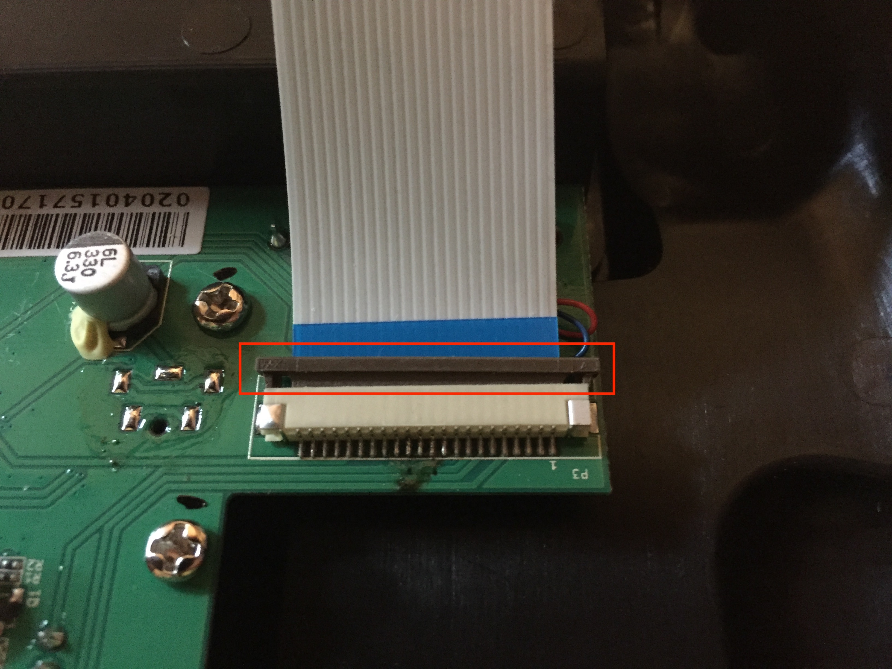
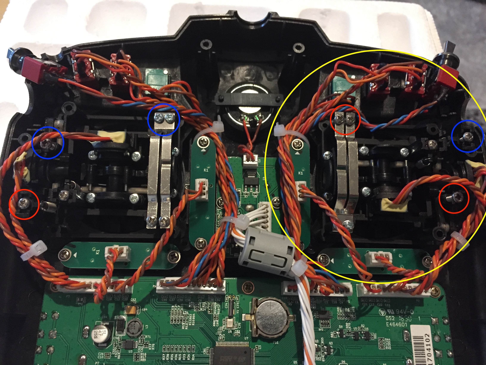

Comment changer le mode de pilotage (mode 1 ou 2) sur la taranis XD9 PLUS
Bonjour à tous.
Aujourd’hui, je vous propose un tutoriel pour modifier le mode de pilotage sur les radios FrSky. Pour ma part, je souhaitais passer du mode 2 au mode 1. Mais le tutoriel marche aussi pour faire l’inverse.
Prérequis
Matériel :
- un tournevis cruciforme
Niveau : Facile
Temps : 5 - 10 min
Étape 1 : Démonter la radiocommande
Dévisser les éléments
Pour commencer, vous allez devoir démonter votre radiocommande en dévissant les 6 vis qui se trouvent à l’arrière de la radio (entouré en rouge sur la photo).
Ensuite, dévisser les anneaux retenant les 2 boutons situés en haute à droite et à gauche.

Seul celui entouré a besoin d’être dévissé. Attention, il y’a le même de l’autre côté.
Ouvrir la radiocommande
Maintenant que toutes les vis sont enlevées, nous allons pouvoir ouvrir la télécommande. Poser la dos vers le haut et tirer délicatement la partie noire de la coque. Pas la peine de forcé, si vous n’y arriver pas vous avez sûrement oublié une vis.
[Facultatif] - Déconnecter les nappes
Vous pouvez si vous le souhaitez déconnecter les nappes. Cela vous donnera plus de liberté dans les mouvements, car vous pourrez dissocier les deux parties de votre radio.
Elles sont représentées en blues sur les photos ci-dessus et ci-dessous. Pour les enlever, vous allez devoir tiret le plastique noir vers le haut. Attention, il ne faut pas l’enlever. Il faut juste le remonter un peu.
Pour remettre les nappes, il faudra insérer la nappe puis redescendre le plastique noir.

Étape 2 : Modifier le mode
Maintenant que notre radio est ouverte, nous allons pouvoir modifier le mode de la radio. Vous allez voir cette étape est très facile.
Étape 2.1
Dans un premier temps, vous allez repérer le manche des gaz actuel. Dans mon cas, j’étais initialement en mode 2, soit le manche des gaz était à gauche donc quand on retourne la radio, celui-ci se retrouve à droite.
Pour commencer vous allez viser la vis du ressort qui se retrouve en haut à droite ou sa symétrie si vous êtes sur l’autre manche.
Ensuite, deviser les deux visse du ressort des crans. Dévissez-les jusqu’à ce que les plaques ne touchent plus les crans en plastique. Vous pouvez au fur et à mesure vérifier que le manche n’a plus de crans.
Dernières étapes pour ce manche vous allez devoir dévisser la vis qui ce situe en bas à droite ou à ça symétrie pour l’autre manche.
Dévissez-la de la même longueur que sur la photo. Soit 5 à 8mm.
Une fois, c’est 3 parties réalisées, votre manche devrait être centré au milieu avec le retour à la position neutre. Les 2 manches de la radio sont exactement pareils.
Étape 2.2
Maintenant dans la partie deux, il va falloir activer le crantage sur le manche qui vous intéresse. Pour cela on refait les étapes à l’inverse.
Pour rappel, on a modifié le manche entouré en jaune sur la photo ci-dessous pour le passer en position centrale.

Maintenant ,on va faire l’étape inverse sur l’autre manche pour activer le crantage.
Sur la photo, j’ai fait un récaptilatif de toutes les étapes à faire.
Pour passer en mode 1 depuis le mode 2, vous dévissez les vis entourées en rouge et vissez les vis entourées en bleue.
Si vous passez en mode 2 depuis le mode 1, vous faites l’inverse. Vous vissez les vis entourées en rouges et dévissez les vis entourées en bleue.
Une fois, tout ceci fait penser à vérifier que les manches bougent bien et comme vous le souhaitez et remonter la radio.
Pensez à remettre les nappes sur le connecteur si vous les avez enlevés.
Maintenant, on va pouvoir passer à la dernière étape.
Étape 3 - Configurer la radio
Tout d’abord, allumer votre radio puis rendez-vous dans le menu de configuration.
Voir la photo ci-dessous.
Descendez tout en bas de la page menue jusqu’à l’option “mode”. Une fois ici, éditer le mode avec le bouton “entrer” et sélectionné le mode souhaitez.
Voilà, vous pouvez sortir du menu et vous êtes fin prêt pour voler :)
Si vous avez des questions, n’hésitez pas à laisser un message dans les commentaires.